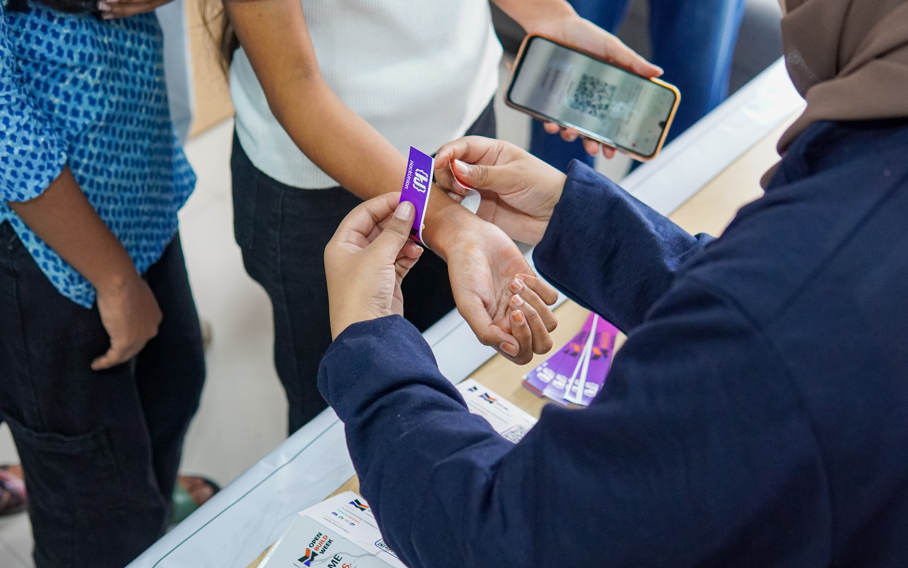

HackUnion Engineering Journal
Builder Stories
7 min read
Why I Started HackUnion
This isn't a story about a single moment of inspiration. It's about a gap I kept running into, between people curious about technology and people who had somewhere to actually build with it.


I didn’t start HackUnion because I had a plan. I started it because I kept noticing the same absence in different rooms, and eventually the absence bothered me more than the risk of trying to fix it.
The absence was this: a lot of people are interested in technology. Fewer people have somewhere to actually do anything with that interest. Those are not the same thing, and for a while I don’t think I fully separated them either.
Interest Without a Place to Put It
I spent a lot of time around students who were, by any reasonable measure, into technology. They followed the right people online, watched tutorials, knew what was happening in AI and open source, had opinions about tools. That’s not nothing. But when it came to actually building something, starting a project, contributing to something real, working with people they didn’t already know, showing unfinished work to someone who might have real feedback, most of that interest had nowhere to go.
It wasn’t a motivation problem. I want to be clear about that, because it would be easy to tell this story as “students today don’t want to build,” and that’s not what I saw. I saw people who wanted to build and didn’t know where to start, who to build with, or whether what they were making was worth showing anyone. The interest was real. The environment for turning it into something wasn’t.
That gap is what I kept running into, on campuses, at events, in conversations after workshops ended and people lingered because the talk hadn’t actually answered what they came for.
Why Another Event Wasn’t the Answer
I’ve been on the organizing side of enough technology events to know exactly what they’re good at and exactly where they stop. An event can create a moment. It can introduce a hundred people to an idea in an afternoon. It can bring a speaker into a room that wouldn’t otherwise have access to them. Those are real, useful things.
What an event structurally can’t do is give someone a place to keep going the next day. The talk ends, the certificate gets issued, everyone goes back to whatever they were doing before, and the interest that got activated for two hours has nowhere left to live. I watched this happen enough times that it stopped feeling like a one-off and started feeling like the actual shape of the problem. It wasn’t that people needed to hear about technology more. It was that they needed somewhere to practice it, badly, in front of people who wouldn’t judge them for it being bad.
That distinction, between attending and participating, is the thing I couldn’t stop thinking about. Attending is passive by design. You show up, you receive something, you leave. Participating requires a place that expects you to bring something, even if it’s rough, even if it’s your first attempt. Almost nothing in a typical student’s environment is built for the second thing.
What I Noticed About the Students Who Wanted to Start
The students who stayed with me longest in my thinking weren’t the ones who were already confident builders. It was the ones who clearly wanted to build something but were stuck on the first step, not because they lacked ability, but because they lacked a person to start with, a low-stakes place to try, or just permission to be bad at something in public.
Confidence, I came to think, isn’t something you develop and then apply. It’s something that gets built through small, survivable attempts in front of people who aren’t going to make you feel small for trying. Most students don’t get many chances at that. Classrooms are graded. Portfolios are supposed to look finished. Even a lot of hackathons implicitly reward people who already know how to build, rather than helping people learn how.
That’s the specific gap I thought a community could close in a way an event never could, not a single high-stakes moment, but a recurring, lower-stakes environment where trying and failing wasn’t the exception, it was just what Tuesdays looked like.
Why It Had to Be a Community, Not a Program
I considered, at different points, whether the answer was just running more structured programs, more workshops, more curricula, more of the same format but better executed. I don’t think that would have solved it. A program has an instructor and a syllabus. It still positions people as recipients of something, even when it’s well designed.
A community is different because the people in it are, at least in theory, both the audience and the source. Someone who showed up last month unsure how to start can be the person helping someone else start this month. That only works if the structure keeps existing beyond any single event, which is part of why HackUnion is built around recurring things: build sprints, regular meetups, a periodic Builders Day, a slightly more structured Builders Guild, and an annual hackathon that functions as a shared moment rather than the entire point. None of that works as a one-time thing. It only works as rhythm.
What I Initially Imagined, and What Actually Happened
When I started, I think I imagined something a bit more straightforward than what HackUnion has actually become, a place where students could build projects together and get some exposure to people further along than them. That part has held up. What I didn’t fully anticipate was how much the real value would come from unglamorous, recurring participation rather than any single flagship moment.
Running things like GitHub Copilot Dev Days taught me something I hadn’t fully appreciated, that a lot of students don’t need to be convinced a tool is powerful, they need a low-pressure first attempt at using it on something real, with someone nearby who’s also figuring it out. Working on OpenBuild Week across multiple campuses pushed that further, the idea that this shouldn’t live inside one college or one friend group, that the same gap exists in a lot of places and the structure should be able to travel to it, not just wait for people to find their way to it.
And watching actual student projects get built inside this, things like StudyFlow, PeerPair, CampusPulse, wasn’t proof that I’d figured out a formula. It was proof that when the environment exists, people fill it with things I wouldn’t have thought to ask for. That’s been the most useful feedback loop in all of this: I don’t get to fully predict what gets built. I just get to keep building the conditions where building is possible.
What the People Who Showed Up Taught Me
A lot of what HackUnion actually is now, I learned from the people who joined it, not from anything I planned in advance. Volunteers who kept a build sprint running when I couldn’t be there taught me that the thing I was worried only I could hold together didn’t actually need to depend on me as much as I assumed. Students who came in nervous and left having shipped something, however small, taught me that the low-stakes attempt part matters more than the polish of what gets built. People who stuck around after their own projects were done, just to help the next group, taught me what I actually mean when I say I want this to be a community and not an audience.
None of that showed up in whatever plan I had at the start. It showed up because I kept the structure open enough for it to.
Where This Leaves Me
I don’t have this fully figured out. HackUnion is still, honestly, a work in progress, some formats work better than others, some campuses respond differently than others, and I’m still learning how much of this can run without me directly involved versus how much still depends on it. I’d rather say that plainly than describe this as some finished system with a clean origin story, because it isn’t one.
What I do know is that the gap I started with is still real. There are still more people curious about technology than there are places for them to actually build with it. That’s the problem I set out to work on, and it’s still the one I’m working on now, not because I’ve solved it, but because every time I see someone go from unsure where to start to having shipped something they made, it’s confirmation that the gap is worth closing, one recurring, unglamorous session at a time.
That’s really what this has been. Not a story about having it figured out. A story about noticing something worth building, and staying with it long enough to keep finding out what it’s actually for.